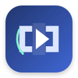

Zovo SkipList
Your private video skip list is ready.
Open a supported YouTube video, use the toolbar popup to mark a start and end, then choose whether that category should auto skip, ask first, or be ignored.
Private by design
Bookmarks, profiles, podcast rules, and listening statistics stay in Chrome extension storage. SkipList does not connect to the SponsorBlock community database. YouTube metadata may be requested from YouTube when page metadata is unavailable. A license key is sent to Zovo only when you press Activate.
Start in three steps
- Open or reload a YouTube video.
- Click the SkipList icon, then choose a bookmark category.
- Press “Start bookmark,” play to the end point, and press it again.
Zovo SkipList is an independent GPL-3.0-or-later fork and is not affiliated with or endorsed by SponsorBlock or its maintainers.